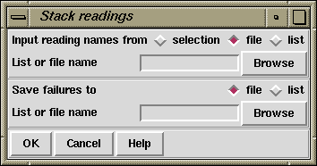

This assembly mode assumes that all the readings are already aligned and simply stacks them on top of one another in a new contig.

Assembly usually works on sets of reading names and they can be read from either a "file" or a "list" and an appropriate browser is available to enable users to choose the name of the file or list. If just a single reading is to be assembled choose "single" and enter the filename instead of the file or list of filenames.
The routine writes the names of all the readings that are not entered to a "file" or a "list" and an appropriate browser is available to enable users to choose the name of the file or list.